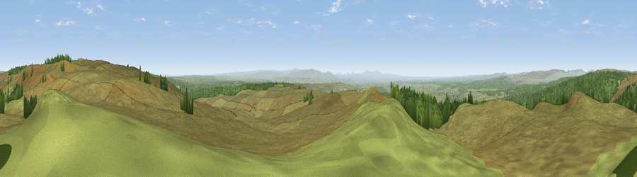

Viewpoint near Bewcastle
#2005 in England · top 2% of its area beats it · near Bewcastle · open accessWhere it is
The exact computed spot (NY 58975 79375). Click the marker for map links.
Public access: this spot lies on mapped open-access land (CRoW Act 2000) — you may roam here on foot. Computed from Natural England's CRoW access layer and OpenStreetMap rights of way — not the legal definitive map. Always verify locally.
The view, rendered

A 360° render of this exact spot computed from the terrain model, tree cover and land cover — summer colours, afternoon light, calibrated against photographs of famous viewpoints. Real trees, hedges and buildings will differ in detail.
The panorama
Grey silhouette: terrain skyline in each direction (720 bearings, Earth curvature and refraction included). Dashed green: skyline with trees (+15 m) and buildings (+8 m) as obstacles. Blue strip: how far the ground is visible on each bearing.
Where the view opens
Wedge length = distance to the farthest visible ground on that bearing (vegetation-aware). Rings at 10, 25 and 50 km.
What fills the view
86% grassland · 14% woodland
Angular shares of the visible panorama (visual magnitude), not map area. Landscape diversity 0.20 (0–1 Shannon).
Key numbers
More beautiful places nearby
The staircase of upgrades: each row has a higher view potential than everything closer. Driving times are estimates from straight-line distance, calibrated against real road routing — check an actual route before setting out.
| Place | Direction | Drive | Score |
|---|---|---|---|
| Viewpoint near Bewcastle | SSW · 1 km | ~2 min | 78.9 |
| Viewpoint c11644_7156 | NNW · 3 km | ~7 min | 80.8 |
| Viewpoint c11995_7247 | N · 21 km | ~35 min | 82.1 |
| Viewpoint near Hepple | ENE · 47 km | ~67 min | 82.4 |
| Viewpoint c12273_7856 | NE · 48 km | ~69 min | 83.7 |
| Viewpoint c12396_7887 | NE · 54 km | ~75 min | 85.7 |
| Viewpoint near Kirknewton | NNE · 60 km | ~83 min | 86.1 |
| Ullock Pike | SSW · 61 km | ~84 min | 89.4 |
55.10707, -2.64457 · source: screening · position refined by local search. Computed location — check access rights before visiting.